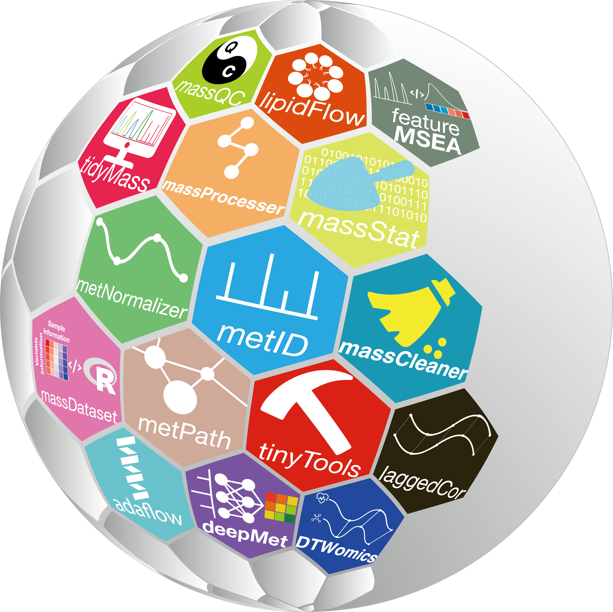
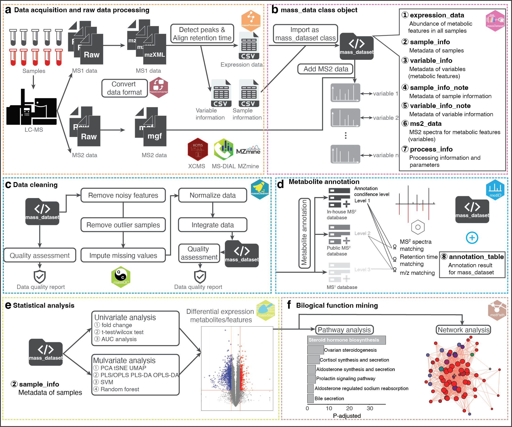

Tidymass: An Object-oriented Reproducible Analysis Framework for LC-MS Data 
About

TidyMass project is a comprehensive computational framework that can process the whole workflow of data processing and analysis for LC-MS-based untargeted metabolomics.
TidyMass was designed based on the following strategies to address the limitations of current tools.
(1) Cross-platform utility
(2) Uniform, shareable, traceable, and reproducible
Analysis workflow of tidyMass

The mass_dataset class and its property

Installation
You can install tidymass from GitHub, GitLab or Gitee.
Option 1: GitHub
if(!require(remotes)){
install.packages("remotes")
}
remotes::install_github("tidymass/tidymass")Option 2: GitLab
remotes::install_gitlab("jaspershen/tidymass")Option 3: Gitee
remotes::install_git(url = "https://gitee.com/jaspershen/tidymass", dependencies = TRUE)More information can be found here.
Need help?
If you have any questions about tidymass, please don’t hesitate to email me (shenxt@stanford.edu) or reach out me via the social medias below.
{kind=link}
M339, Alway Buidling, Cooper Lane, Palo Alto, CA 94304
Citation
If you use tidymass in you publications, please cite this publication:
X. Shen, R. Wang, X. Xiong, Y. Yin, Y. Cai, Z. Ma, N. Liu, and Z.-J. Zhu* (Corresponding Author), Metabolic Reaction Network-based Recursive Metabolite Annotation for Untargeted Metabolomics, Nature Communications, 2019, 10: 1516.
Web Link.
Thank you very much!